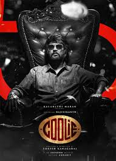

SPOTSTAR - RAJINIKANTH
Rajinikanth, born as Shivaji Rao Gaekwad on December 12, 1950, is one of the most iconic and influential actors in Indian cinema. He began his career as a bus conductor in Bangalore before pursuing acting at the Madras Film Institute. He made his film debut in 1975 and quickly rose to fame with his unique style, charismatic screen presence, and powerful dialogue delivery. Known as the Superstar of Tamil cinema, Rajinikanth has acted in a wide range of films across languages, including Tamil, Telugu, Hindi, and Kannada. He is celebrated for his roles in blockbuster hits like Baashha, Padayappa, Sivaji, Enthiran, and Kabali. His larger-than-life persona and ability to connect with audiences from all walks of life have made him a cultural phenomenon. Despite his immense success, Rajinikanth is known for his humility, spiritual outlook, and simple lifestyle. He has received numerous awards and honors, including the Padma Bhushan and Padma Vibhushan from the Government of India. Beyond cinema, Rajinikanth commands great respect in social and political circles, and his influence extends far beyond the screen.
POPULAR FILMS


